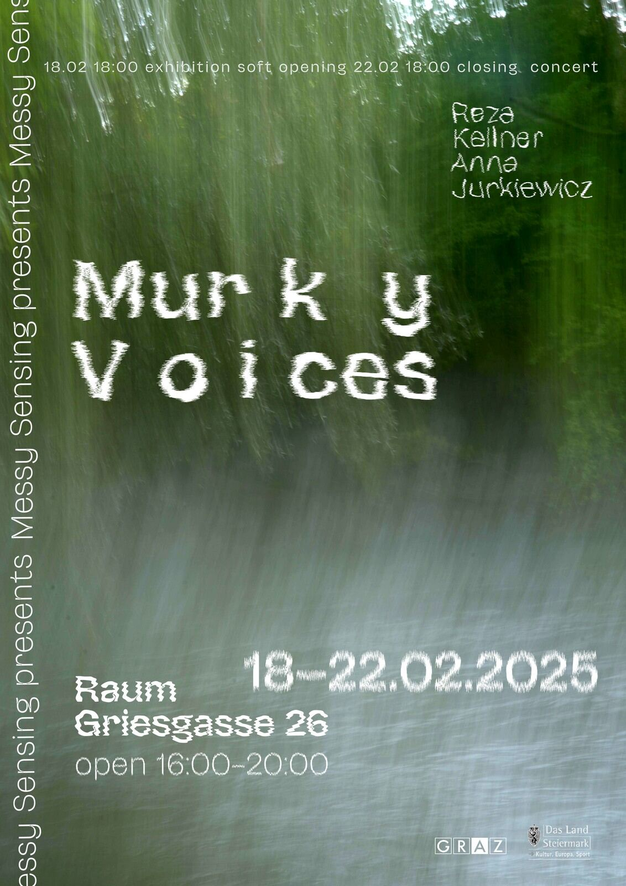

An artist book gathering the sonic, visual and written outputs of the River Becoming research: soundwalk scores, photographs, and polyphonic letters from the Mur river.
Murky Voices attempts to interview Mur/Mura and hear its non-human stories on the move. The listening is entangled with swirling waves of human voices and perspectives on the presence and agency of the Mur river in Graz. Travelling sediments and sensations soaking with murky Mur water. Sometimes deafening noise, sometimes whispers in wet wrinkles. Bodies craving the immersion in cold fluid. Dams, vibrating bridges, storm canals. The quick silent shine of a kingfisher near Augarten.
Reza Kellner's photographs follow the movement of Mura and other bodies that cross paths with it. Instead of trying to freeze the shaking and oscillation, the photography embodies this movement as part of the creative process, bringing together temporality and the aspect of moving through space. The images evoke the feeling of passing by the river more than staring at it from a fixed position.
Anna Jurkiewicz's Letters of Mixed Feelings (2023) are sprouting, nourished by the river. Feelings understood as sensations, embodied signs, instincts and drives, entangled in interspecies and inter-object relationships. The polyphonic poem is an invitation to put out one's feelers toward non-human channels and voices caught from behind the human stream of consciousness.
Mur Soundwalk scores by Antuum, Lain Iwakura, Eva Ursprung, Chloé Ryo, Reza Kellner and Anna Jurkiewicz make up the core of this book, which is meant to be taken back to the river.
Medium
Artist book
Photography
Reza Kellner
Text
Anna Jurkiewicz
Design
Reza Kellner, Anna Jurkiewicz
Soundwalk scores
Antuum, Lain Iwakura, Eva Ursprung, Chloé Ryo, Reza Kellner, Anna Jurkiewicz
Published
Graz, 2025
Murky Voices
18 – 22 February 2025
raum
Griesgasse 26
8020 Graz, Austria
Open 16:00 – 20:00
Soft opening 18.02, 18:00
Closing concert 22.02, 18:00

Murky Voices attempt to interview Mur/Mura and hear its non-human stories on the move. The listening is entangled with swirling waves of human voices and perspectives on the presence and agency of Mur river in Graz. Travelling sediments and sensations soaking with murky Mur water. Sometimes deafening noise, sometimes whispers in wet wrinkles. Bodies craving the immersion in cold fluid. Dams, vibrating bridges, storm canals. The quick silent shine of a kingfisher near Augarten. What do we hear, feel and remember when we walk by the river? What and who is absent in our perception?
Sheasheushiishhhhhshsheaeshuee.
The exhibition consists of a selection of works created within the River Becoming project in 2024. They include audio and video installations, printed photography and texts presenting the outcomes of artistic research on Mur river, field recordings, interviews, and scores for Mur soundwalks.
Six soundwalks took place along the Mur, facilitated by artists who approached the river with their own ways of listening. In that process, Mur became a collaborator, a witness, and a medium. The results — scores, fragments of text, poetic reflections, and a selection of photographs — have been gathered into a booklet. This collection, a map of the river's rhythms, roars, and silences, will also be presented in the exhibition, offering visitors a chance to retrace the paths of these sonic explorations.
by Reza Kellner and Anna Jurkiewicz
with contributions from Chloé Ryo, Anton Tkachuk, Eva Ursprung, Lain Iwakura
With many thanks to everyone who shared their Mur stories!
Supported by Stadt Graz and Land Steiermark.